相同冻结体块、同一评价目标；原生二维方法与三维实现整体比较。FlowOCT 两种推理使用同一训练权重。
| 模型 / 求解器 | 训练 PCC | 训练 SSIM | 验证 PCC | 验证 SSIM | 验证血管区 MAE |
|---|---|---|---|---|---|
| 01_fm3d / Euler8 | 0.2512 | 0.1568 | 0.3215 | 0.2016 | 0.1117 |
| 02_fm3d_wavelet / Euler8 | 0.2909 | 0.1785 | 0.3333 | 0.1861 | 0.0890 |
| 03_fm3d_zproj / Euler8 | 0.2683 | 0.1493 | 0.3303 | 0.1958 | 0.1070 |
| 04_fm3d_wavelet_zproj / Euler8 | 0.2649 | 0.1675 | 0.3205 | 0.1928 | 0.0998 |
| 05_fm3d_wavelet_zproj_reconstruction / Euler8 | 0.2886 | 0.1648 | 0.3170 | 0.1861 | 0.1013 |
| 06_flowoct / native3 | 0.4782 | 0.3666 | 0.3512 | 0.2216 | 0.0913 |
| 06_flowoct / shared8 | 0.4747 | 0.3778 | 0.3588 | 0.2206 | 0.0896 |
| 模型 / 求解器 | 训练 PCC | 训练 SSIM | 验证 PCC | 验证 SSIM | 验证血管区 MAE |
|---|---|---|---|---|---|
| 01_fm3d / Euler8 | 0.2714 | 0.2141 | 0.2970 | 0.2040 | 0.1636 |
| 02_fm3d_wavelet / Euler8 | 0.3258 | 0.2314 | 0.3252 | 0.1901 | 0.0950 |
| 03_fm3d_zproj / Euler8 | 0.2239 | 0.1986 | 0.2723 | 0.2061 | 0.1794 |
| 04_fm3d_wavelet_zproj / Euler8 | 0.3240 | 0.2374 | 0.3258 | 0.1999 | 0.1060 |
| 05_fm3d_wavelet_zproj_reconstruction / Euler8 | 0.2967 | 0.2468 | 0.2779 | 0.1888 | 0.1302 |
| 06_flowoct / native3 | 0.4107 | 0.3111 | 0.3904 | 0.2452 | 0.1024 |
| 06_flowoct / shared8 | 0.4079 | 0.3103 | 0.3853 | 0.2461 | 0.0978 |
前两行采用8步自由生成；最后一行是纯起点直接拟合能力检查。高训练分数不能代替验证泛化。
| 对照 | 训练 PCC | 训练 SSIM | 验证 PCC | 验证 SSIM |
|---|---|---|---|---|
| uniform_fm_1600 | 0.3290 | 0.1634 | 0.3300 | 0.2175 |
| flowoct_1600 | 0.4301 | 0.3476 | 0.3072 | 0.1913 |
| start_only_mse | 0.9208 | 0.8881 | 0.2855 | 0.1928 |
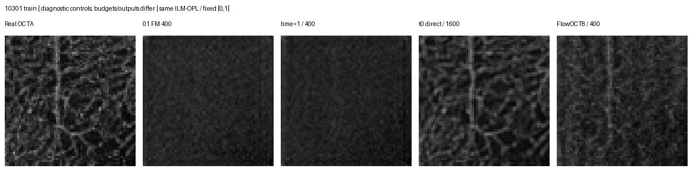
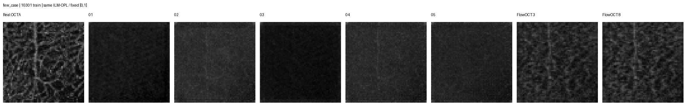
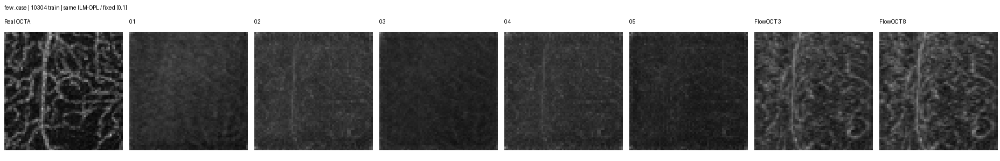
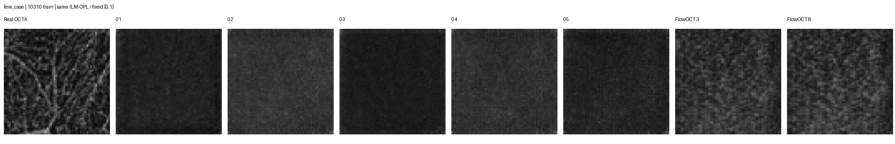
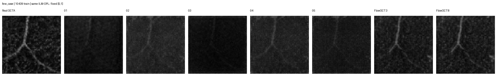
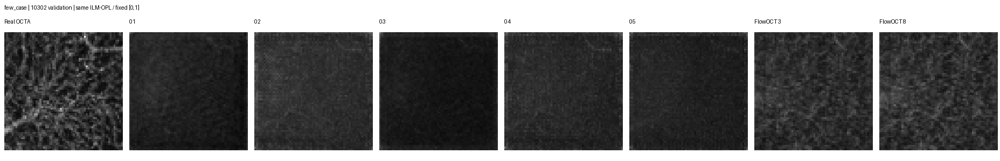
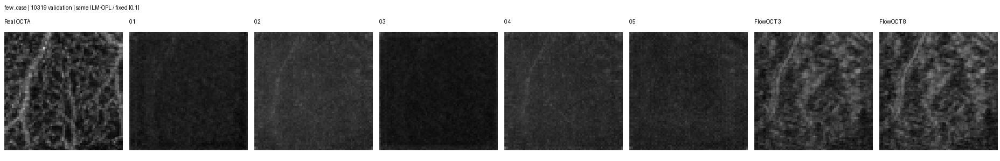
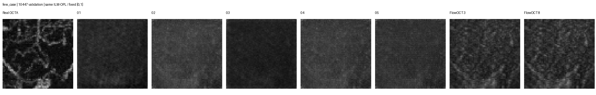
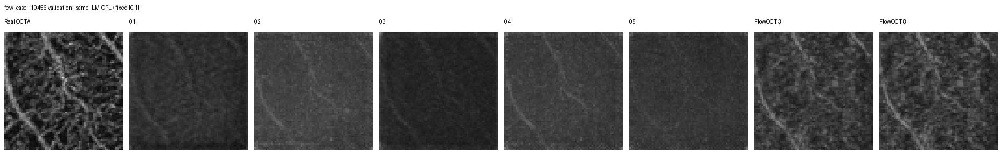
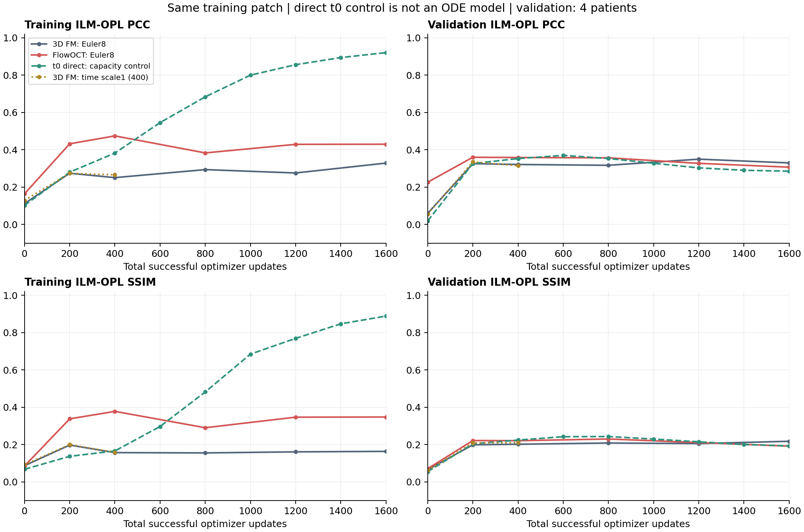
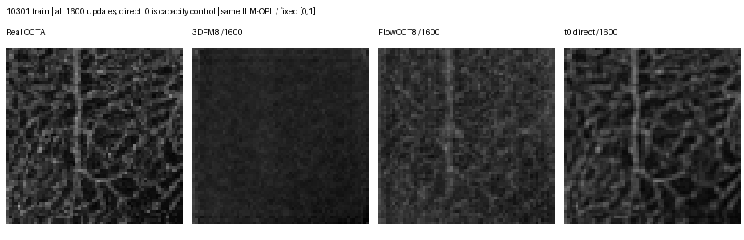
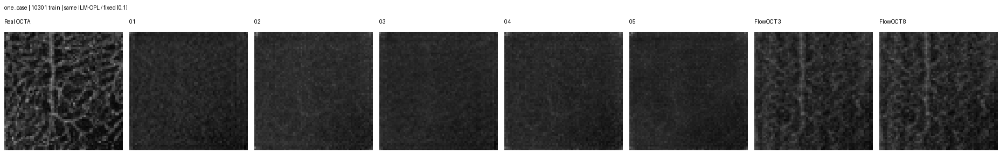
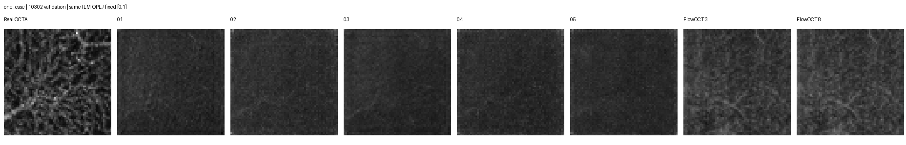
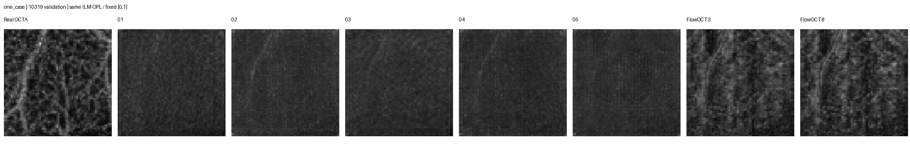
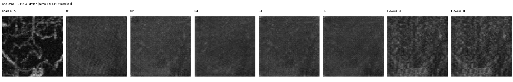
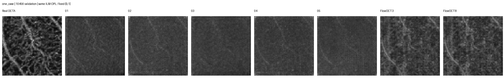